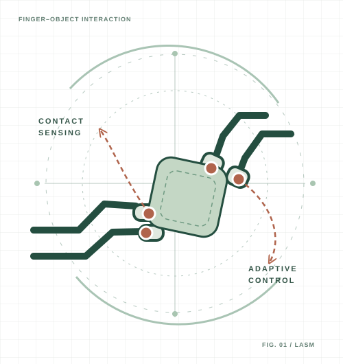

Grasp it reliably.
Robust grasping & contact adaptation
Grasp synthesis, stability estimation and adaptation under uncertain geometry, contact forces and object properties.
MIAO LI / PROFESSOR · VICE DEAN · WUHAN UNIVERSITY
I study how robots can learn to grasp, manipulate, and interact with the physical world — combining contact-rich sensing, robot learning, and real-world systems.

01 / RESEARCH
Toward robot systems that perform robust, versatile and collaborative physical tasks in real environments.
Robust grasping & contact adaptation
Grasp synthesis, stability estimation and adaptation under uncertain geometry, contact forces and object properties.
Dexterous manipulation & robot learning
Learning contact-rich skills from demonstrations, with visuo-tactile sensing, multimodal policies and real-world feedback.
Embodied systems & multi-robot interaction
Coordinated operation, intelligent physical interaction, and practical robotic systems that accomplish real tasks.
02 / SELECTED PUBLICATIONS
MULTIMODAL ROBOT LEARNING
A guided visuo-tactile framework for refining end-effector pose and closed-loop grasping under contact uncertainty.
SCIENTIA SINICA Technologica · 2026
DEMONSTRATION & POLICY LEARNING
DexSo-UMI integrates embodiment-aware demonstration collection and motion- and grasp-aware policy learning.
SCIENTIA SINICA Technologica · 2026
VISUO-TACTILE PERCEPTION
Object-in-hand 6D pose estimation through multimodal vision and tactile sensing.
Project & dataset
Selected papers only. For the current full record, please refer to Google Scholar. Bibliographic records and project status are maintained by their source publishers.
03 / ROBOTS & IMPACT
My work connects fundamental research in manipulation with systems that are evaluated in physical environments.
The joint Wuhan University–AGIBOT team won gold in the dexterous-hand powder-weighing event, autonomously weighing 20 g of salt in 27 seconds at the August 2026 games.
Read the university report ↗REAL-WORLD LEARNING
Multimodal data collection and policy learning on real robotic platforms, from visual perception to physical grasp.
Explore DexSo-UMI ↗INDUSTRY TRANSLATION
Founded COBOT Technology in 2016 and Wuhan Shouzhi Innovation in 2024, bridging robotic manipulation research and real-world applications.
Background & experience ↗04 / ABOUT
I am a professor and vice dean of the School of Robotics at Wuhan University, where my research focuses on robotic grasping and manipulation, tactile sensing, learning from human demonstration, and intelligent physical interaction.
Before joining Wuhan University, I pursued doctoral research at EPFL’s Learning Algorithms and Systems Laboratory, working with Professor Aude Billard. In parallel with academic work, I have built entrepreneurial experience bringing robotics research closer to applications.
Our current research also explores embodied intelligence for autonomous experimentation (AI for Science), tactile-data collection, and human-in-the-loop robot skill acquisition.
Professor & Vice Dean · School of Robotics
Robot grasp adaptation and learning from humans
Robotics ventures founded in 2016 and 2024
Earlier work, teaching materials and the full publication archive remain accessible through the links below.
Research archive ↗ Publication archive ↗ Applications ↗ CV (archived PDF) ↗
LET'S CONNECT
Research collaboration, academic exchange, and conversations about robot learning.